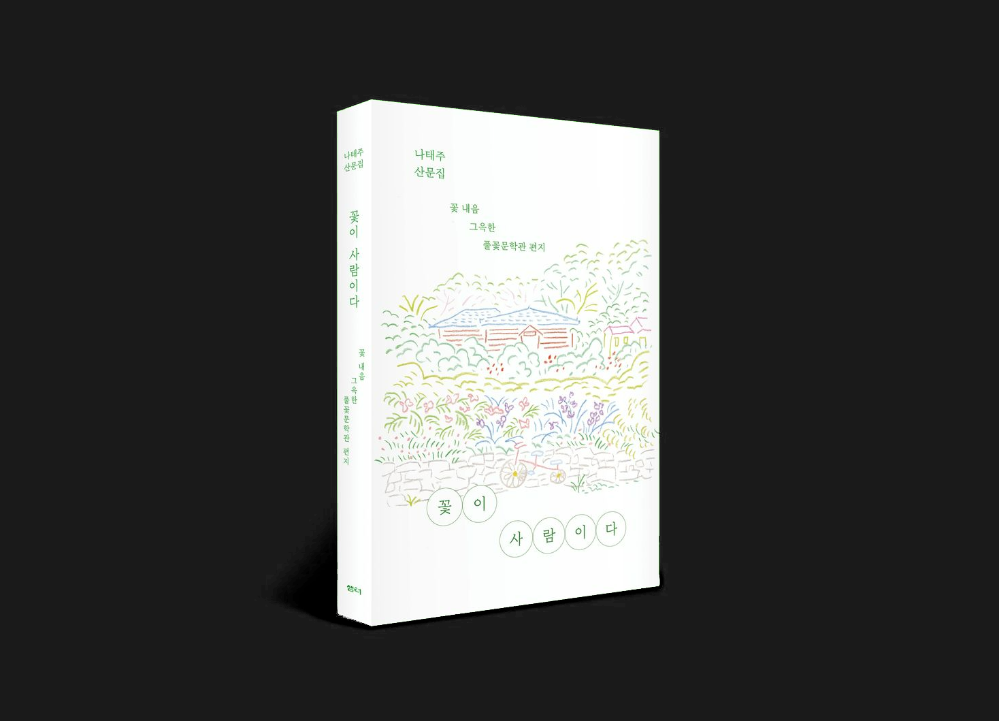
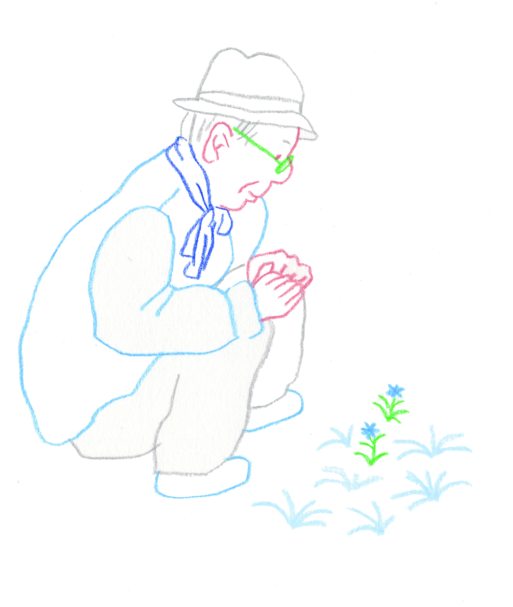
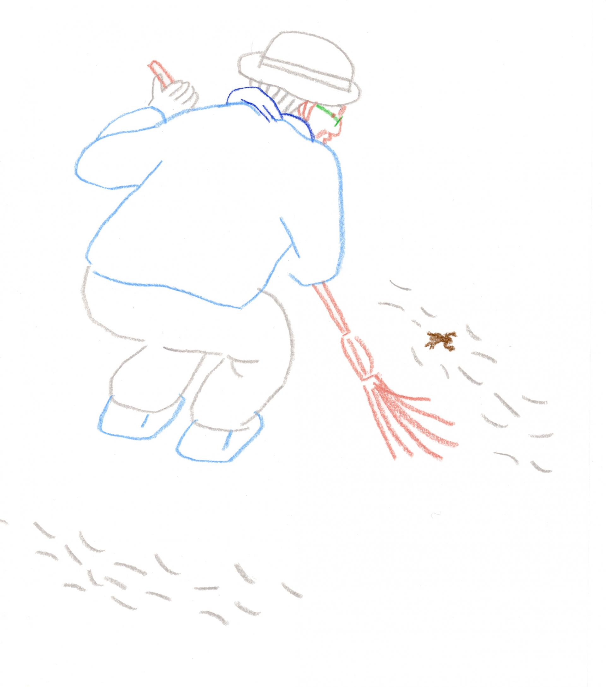
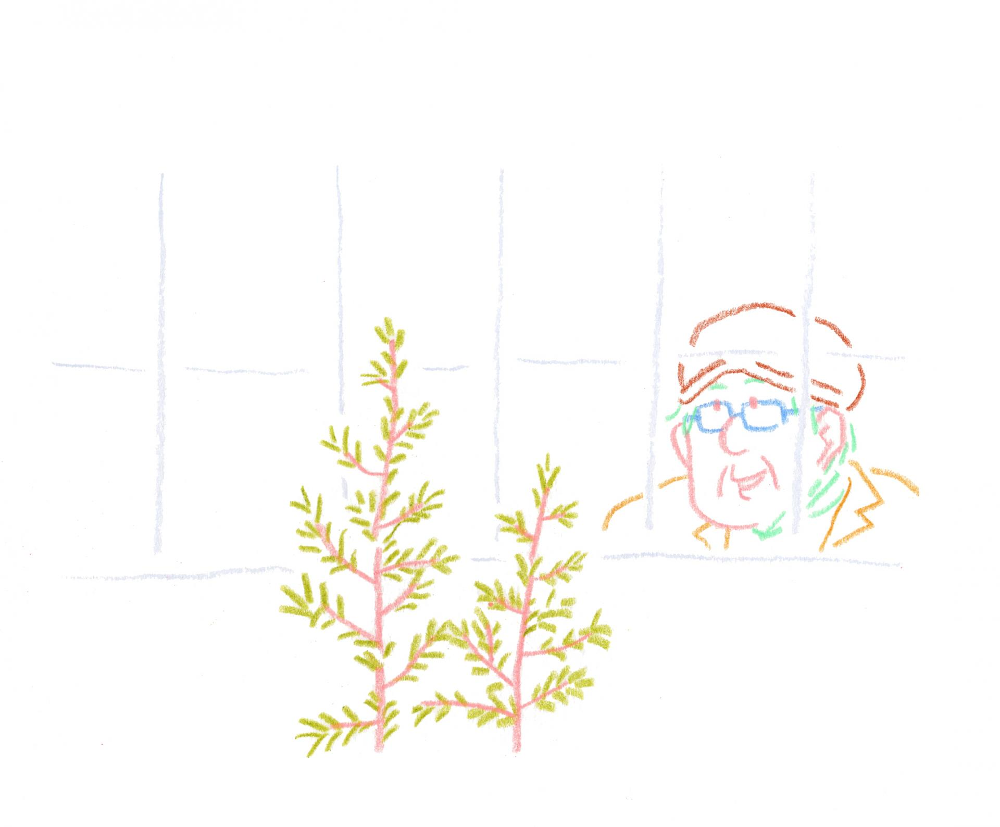
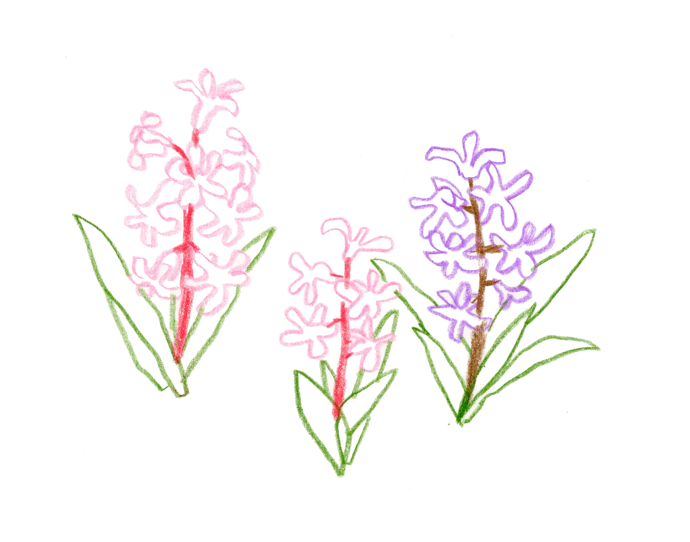
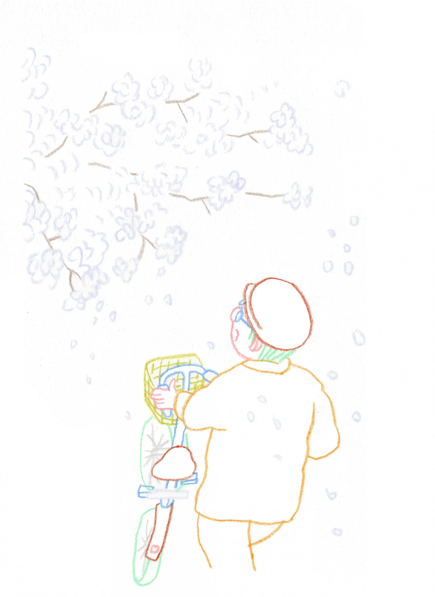
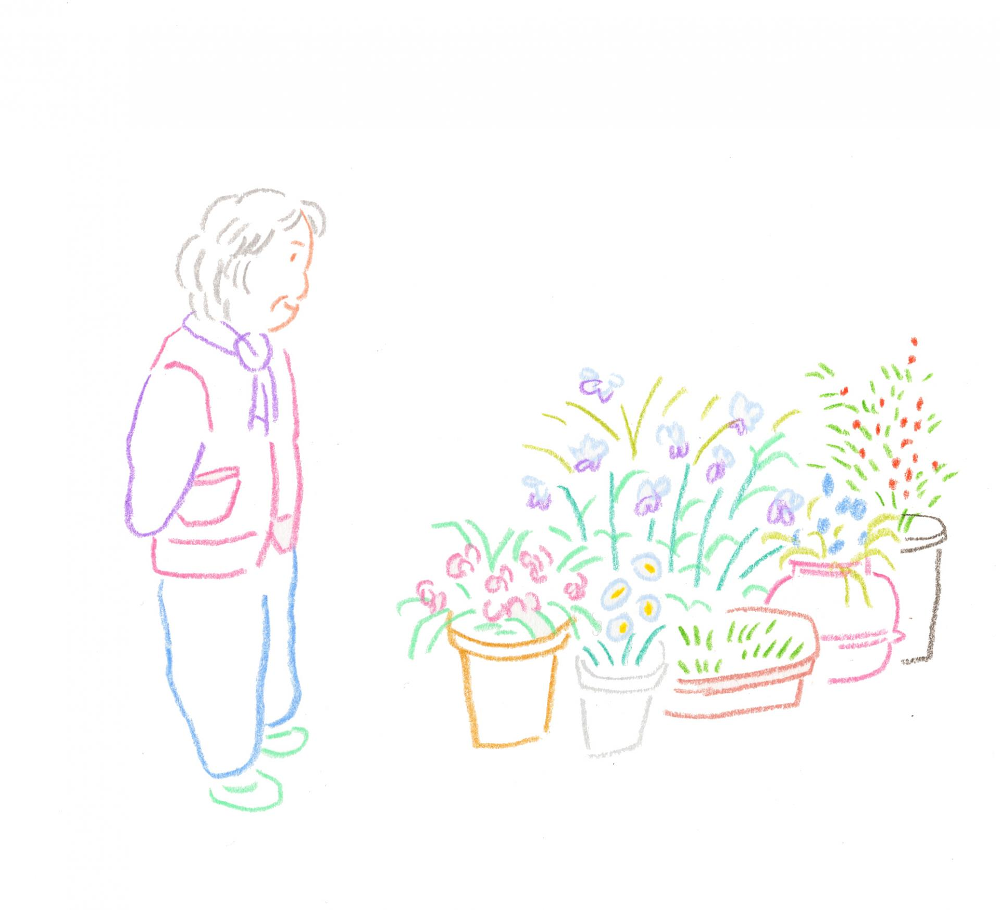
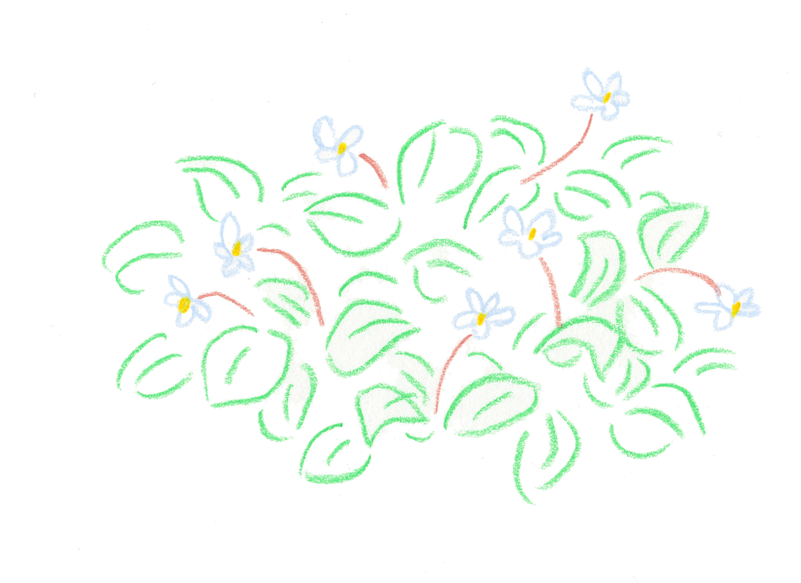
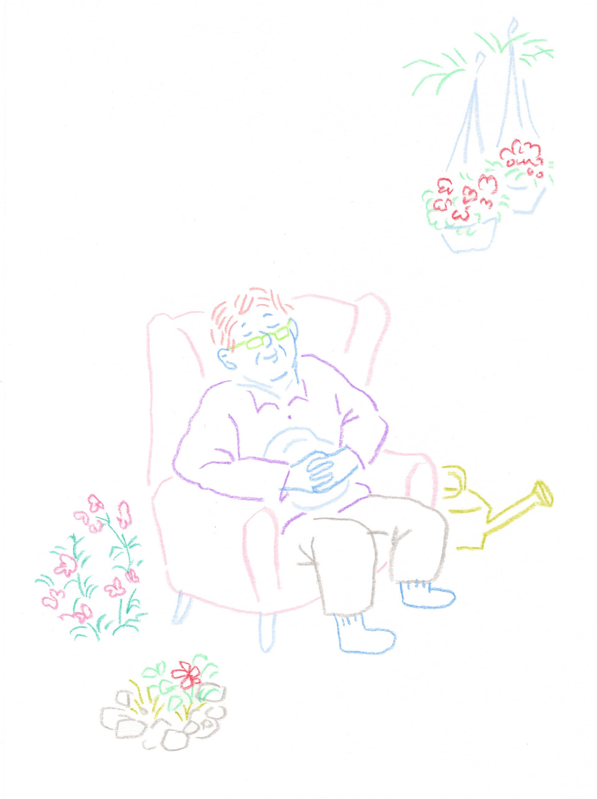

2014년 공주에 유일하게 남아있는 일본식 가옥에 지어진 풀꽃문학관에서의 10년 기록을 담은 나태주 시인의 산문집에 삽화로 참여했습니다. 올해 새롭게 문학관이 개관할 예정이어서 사라질 현재의 풀꽃문학관에서의 기록을 담았다고 합니다.
처음 원고를 받았을 때가 생각나네요. 겨울에서 시작해 봄으로 끝나는, 읽고 있으면 계절이 느껴졌어요. 이 다채로운 풀꽃들을 어떻게 그리면 좋을까 생각하다가 계절별로 4-5가지씩의 컬러로 그렸습니다. 색연필로 단순한 선을 그리되 풀꽃들의 특징을 포착해내려고 했어요. 계절마다 피어나는 풀꽃들을 잘 살펴주세요.
I contributed illustrations to a collection of prose by poet Na Tae-ju, documenting ten years at the Pulkkot Literary Museum — built in 2014 inside the last remaining Japanese-style house in Gongju. The museum is set to be rebuilt and reopened, so the book captures the current space before it disappears.
I still remember receiving the manuscript for the first time. It began in winter and ended in spring — reading it, you could feel the seasons turning. I thought carefully about how to draw these wildflowers, and decided to use four to five colors for each season. I drew simple lines with colored pencils, trying to capture the distinct character of each flower. Look closely at the wildflowers blooming season by season.